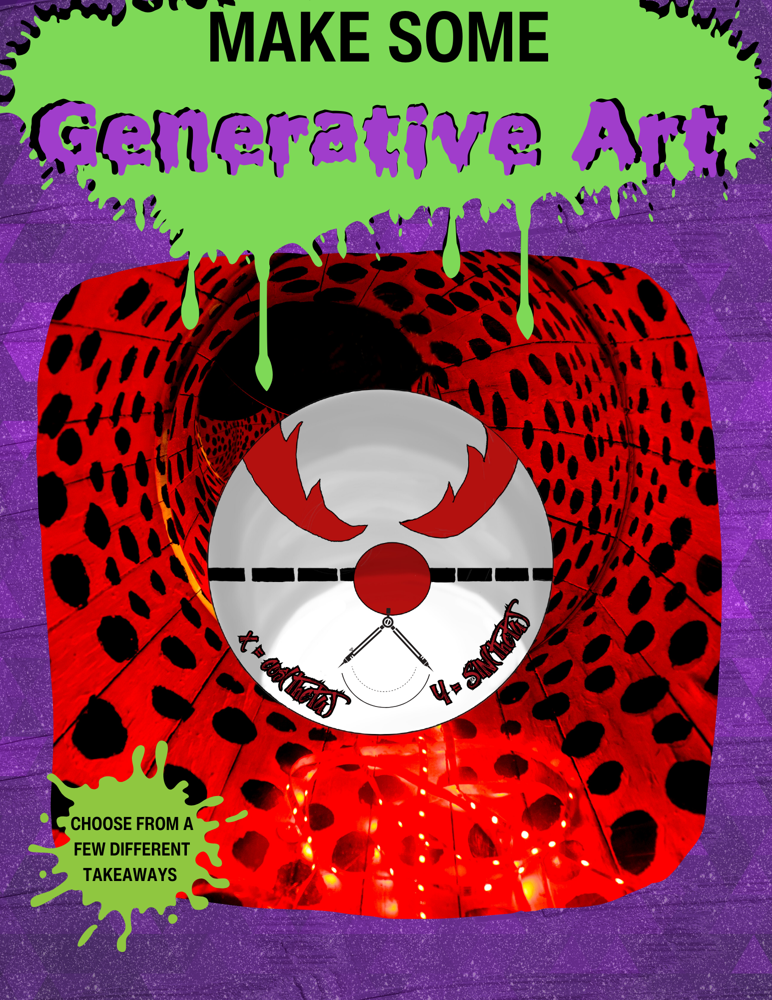

#====================================================#
# Library Load-in-------------------------------------
from plotnine import *
import pandas as pd
# Image Options---------------------------------------
#Set the color
orange_hex = "#FFBB58"
#Set the width
chonk = 10
# Data Creation----------------------------------------
line = pd.DataFrame({"x" : list(range(0,5)),
"y" : 1,
"color" : orange_hex,
"size" : chonk})
# Plot Creation----------------------------------------
orange_line = (ggplot(line, aes("x", "y"))+
geom_path(color = line.loc[:,"color"],
size = line.loc[:,"size"])+
coord_equal(ylim = (0,3), xlim = (0,4)))
#View the plot
print(orange_line)It’s All About Perspective
Making A Case for Generative Art
September 20th, 2023 | 2023-09-20



@KazeKomboArt


@KazeKomboArt

@KazeKomboArt
How Can we Make Generative Art in R or Python?
Some ‚ÄúPrimitive‚Äù Graphical Toolsüõ†
How Can we Make Generative Art in R or Python?

How Can we Make Generative Art in R or Python?
A More Complicated Example (In R)
# Library Load-ins---------------------------------
library(ggplot2); library(dplyr); library(artpack)
# Let's make a basic "cityscape" with a moon
# Plot Creation-------------------------------------
#Data Goes Here |>
ggplot(aes(x,y)) +
theme_void() +
coord_cartesian(xlim = c(0,4), ylim = c(0,3),
expand = FALSE)
#....Benefits of Creating Generative Art
The Abstract ü߆
- Functional Programming


Benefits of Creating Generative Art
The Unexpected üò≤
- Rtistry Textbook?! - “Rtistry: Methods For Visual Generative Art Using R”

- Yes!!
- Co-authored with Antonio Páez, Antonio Chinchón, and Jacquie Tran
- First open-sourced textbook dedicated to teaching readers how to create generative art in R
Benefits of Creating Generative Art
The Most Important ❤️
- It’s therapeutic, fun, and (mostly) low-stress

Examples of How Generative Art Translates into Data Science - Iteration♻️
Aim:
- Want to create a lot of copies of a shape where each shape has a different color and a different position on the coordinate system

Aim:
- Want to skim, label, and save multiple processed data sets all at once
Examples of How Generative Art Translates into Data Science
Development üì¶
- Learning and honing in on development skills is another HUGE feat
- In Generative Art, this promotes cleaner and robust workflows and more complex operations
- In Data Science, it does the same, but you’re really moving up to new levels✨.